Objetivos
- Conocer el concepto de web semántica.
- Conocer las nuevas funcionalidades y etiquetas incluidas en HTML5.
Introducción y contextualización práctica
La web evoluciona día tras día y las tecnologías deben adaptarse a las nuevas necesidades que van apareciendo. Por ello, el lenguaje HTML ha evolucionado hasta llegar a esta quinta revisión. Esta aporta numerosas novedades que permitirán conseguir aplicaciones web cada vez más parecidas a una aplicación de escritorio.
En toda esta evolución trabaja continuamente la comunidad internacional W3C, cuya misión es guiar a la web hacia su máximo potencial. Quién sabe si en breve estaremos hablando de HTML6.
La agencia de viajes necesita mejorar el formulario creado en el tema anterior, ya que quiere incluir nuevos controles y consultas. Gloria hablará por teléfono con el responsable de la agencia para saber qué necesita exactamente.
Alberto le comenta también a Gloria que ha incluido en el blog de la empresa una entrada donde incluye una guía de HTML5 y un podcast para ayudarle en su trabajo.
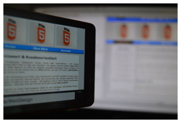
Concepto de web semántica y HTML5
HTML5 es la última versión de HTML y aporta nuevas especificaciones relativas al desarrollo web. Por lo tanto, no lo podemos considerar como una simple evolución de HTML 4 que incluye nuevas etiquetas, ya que también agrupa tecnologías de apoyo complementarias.
Esta nueva versión permitirá aplicaciones web muy similares a aplicaciones de escritorio, de forma que se consigue una mejor experiencia al usarlas, pues se pretende que el uso del navegador no limite la potencia y funcionalidad de una determinada aplicación informática.
2.1. Mejoras de HTML5
Como se ha comentado, HTML5 no solo incorpora nuevas etiquetas y atributos en etiquetas ya existentes, sino que incluye mejoras que se pueden clasificar en los siguientes grupos:
- Semántica: se dispone de nuevas etiquetas que le darán un valor semántico a la estructura de la web. De esta manera, las partes de la web se podrán agrupar en etiquetas que representen las partes principales del documento HTML.
- Etiquetas multimedia: es posible incluir audio o vídeo sin tener que usar controles externos.
- Gráficos 2D/3D: permite una mayor capacidad de presentación de este tipo de gráficos.
- Bases de datos locales: capacidad de almacenar información localmente, lo cual permite que algunos módulos o aplicaciones web funcionen sin conexión.
- Rendimiento e integración: mayor optimización de la velocidad y del uso del hardware del ordenador.
- Geolocalización: permite localizar nuestra ubicación.
- Arrastrar y soltar: es una funcionalidad que podremos tener en nuestras páginas web.
- Desaparecen las etiquetas de presentación: en HTML5 todo el aspecto visual de la página web se tiene que realizar a través de hojas de estilo CSS, que veremos más adelante.
No todos los navegadores soportan todas las funcionalidades de HTML5. Para comprobar la compatibilidad del navegador y consultar un informe sobre qué etiquetas se pueden usar, existe HTML5 Test. Con Can I use podremos consultar si un navegador concreto soporta una etiqueta.
Nuevas etiquetas
HTML5 hereda la gran mayoría de etiquetas que hemos visto en temas anteriores, pero aporta muchas más. Para explicarlas, las agruparemos en la siguiente clasificación:
- Etiquetas para la estructura del documento: nos van a permitir estructurar la página web a través de su significado semántico.
- Nuevos elementos de formulario: tendremos nuevas etiquetas y atributos para los controles incluidos en el formulario.
- Etiquetas multimedia: podremos integrar contenido incrustado gracias principalmente a las etiquetas
<audio>y<video>. - Elementos interactivos: permitirán interactuar con algunos elementos HTML para generar efectos interesantes.
Cuando se trabaje con HTML5 hay que indicarlo en el tipo de documento (DOCTYPE). Todo documento HTML5 debe comenzar con la siguiente línea de código, que se ha simplificado mucho con respecto a otros tipos de documento, como HTML4 o XHTML 1.0:
<!DOCTYPE html>3.1. Etiquetas para la estructura del documento
En HTML4, cuando se quería dividir el documento en secciones, teníamos que usar la etiqueta <div> y no era posible utilizar otra etiqueta. Por lo tanto, nos veíamos muy limitados a la hora de dar significado a contenidos agrupados.
Con HTML5 podremos dividir el documento HTML tal y como se muestra en la siguiente figura. Todas estas etiquetas las usaremos dentro de <body> y, a su vez, podemos incluir todos los elementos HTML que hemos visto en temas anteriores.
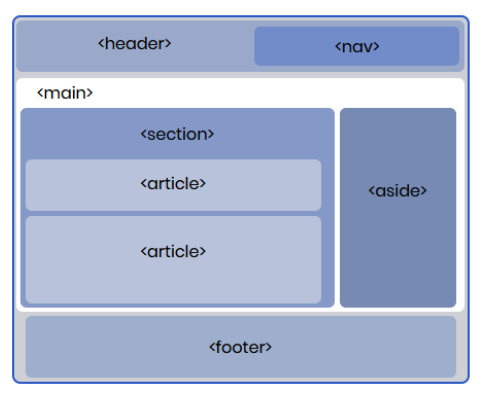
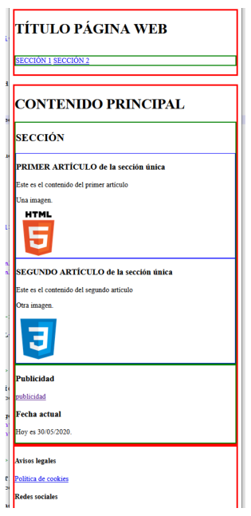
3.1.1. Cabecera (<header>)
Normalmente se ubica al principio de la página. No debemos confundir esta etiqueta con la cabecera principal del documento HTML, que indicamos con la etiqueta <head> y que se encuentra al principio de nuestra página web.
Dentro de esta etiqueta se colocará el contenido que queremos dedicar a la cabecera del documento, como puede ser el logo de la empresa, el nombre, el eslogan o la navegación. El encabezado también se puede utilizar dentro de otros elementos semánticos, como la cabecera de una sección, aportando datos sobre esa parte del documento. En este caso su ubicación no es el principio de la página.
3.1.2. Navegación (<nav>)
Define la parte del documento donde tendremos los enlaces que nos van a permitir acceder a los diferentes apartados del documento HTML. Normalmente se asocia con el menú superior que podemos ver en numerosas páginas web.
Al igual que ocurre con la etiqueta <header>, también podremos disponer de esta etiqueta en otras partes del documento HTML, por ejemplo, en un menú que tengamos en el pie de página o en un lateral.
3.1.3. Contenido principal (<main>)
Dentro de esta etiqueta tenemos el contenido principal de nuestra página. Tiene las siguientes características:
- Es única en la página. No se puede repetir.
- No puede formar parte de otra capa.
- Contendrá el contenido que varía de una página a otra. Normalmente, el resto de etiquetas semánticas se repiten en todas las páginas de nuestro sitio web.
3.1.4. Contenido genérico (<section>)
El contenido que incluyamos en esta etiqueta serán secciones de información similares. Por ejemplo, si tenemos un blog sobre deportes, podremos crear una sección de baloncesto, otra de fútbol y otra de ciclismo.
Las etiquetas <section> se pueden repetir en nuestra página y pueden contener, a su vez, otras cajas <div> o <article>.
3.1.5. Contenido específico (<article>)
Su objetivo también es albergar contenido de nuestra página web. Muestra información más concreta y suele tener un carácter autónomo. Normalmente se incluye dentro de la etiqueta <section>. Siguiendo con el ejemplo anterior, podríamos tener uno o varios artículos relacionados con la sección de fútbol.
3.1.6. Contenido independiente (<aside>)
Es la parte de la web donde vamos a mostrar un contenido secundario que es independiente del contenido principal. Suele mostrar información como un anuncio, un calendario o publicidad. Casi siempre se ubica en un lateral de la web.
3.1.7. Pie de página (<footer>)
Dentro de esta etiqueta generalmente se indica el copyright, el autor, la fecha, las redes sociales, el contacto, etc.
El <footer> no es propio de la página web en su conjunto, dado que también podríamos tener un pie de página en una sección donde mostrar la fecha de creación, el autor, etc.
Código en estructura de HTML5
La distribución de los bloques mostrados en la figura 3 no es la más habitual: el bloque de publicidad suele estar a la derecha, el menú a la derecha o centrado, los artículos uno al lado del otro, etc. Para colocar cada una de esas cajas en su lugar usaremos CSS. Para entender la distribución del contenido en HTML5, este código muestra una estructura posible:
<!DOCTYPE html>
<html lang="es">
<head>
<title>Estructura HTML5</title>
<meta charset="UTF-8">
</head>
<body>
<!-- Cabecera -->
<header>
<h1>TÍTULO PÁGINA WEB</h1>
<nav>
<a href="seccion1.html">SECCIÓN 1</a>
<a href="seccion2.html">SECCIÓN 2</a>
</nav>
</header>
<main>
<section>
<h2>SECCIÓN</h2>
<article>
<h3>PRIMER ARTÍCULO de la sección única</h3>
<p>Este es el contenido del primer artículo</p>
<div>
<p>Una imagen.</p>
<img src="html5.png" alt="Icono HTML5" width="100" height="100">
</div>
</article>
<article>
<h3>SEGUNDO ARTÍCULO de la sección única</h3>
<p>Este es el contenido del segundo artículo</p>
<div>
<p>Otra imagen.</p>
<img src="css3.png" alt="Icono CSS3" width="100" height="100">
</div>
</article>
</section>
<aside>
<h3>Publicidad</h3>
<a href="https://www.diariosur.es">
<img src="diariosur.png" alt="Publicidad">
</a>
<h3>Fecha actual</h3>
<p>Hoy es 30/05/2020.</p>
</aside>
</main>
<footer>
<h4>Avisos legales</h4>
<a href="cookies.html">Política de cookies</a>
<h4>Redes sociales</h4>
<a href="mitwitter.html">Conecta con mi Twitter</a>
</footer>
</body>
</html>Código 1 y Código 2. Código HTML con estructura HTML5.
Nuevos elementos de formulario
La especificación HTML5 nos va a permitir incluir nuevos controles en nuestro formulario. A continuación se muestran algunos de los más importantes.
5.1. Tipos de input
En la siguiente tabla se muestran algunos de los nuevos tipos de <input>:
| Control | Función | Atributo |
|---|---|---|
| No se va a permitir enviar el formulario si la dirección de correo electrónico no es correcta. | type="email" | |
| url | No se va a permitir enviar el formulario si la dirección URL no es correcta. | type="url" |
| fecha | Muestra un calendario para elegir fecha. | type="date" |
| hora | Permite introducir una hora en formato de 24 horas. | type="time" |
| fecha y hora | Combina fecha y hora. | type="datetime-local" |
| número | Comprueba que el dato introducido sea un número. | type="number" |
| rango | Muestra un control deslizante que nos permitirá elegir un valor. | type="range" |
| color | Permite elegir un color de una paleta. | type="color" |
El material de referencia menciona type="datetime"; para seleccionar una fecha y hora local en formularios actuales se utiliza datetime-local.
Los elementos input también tienen nuevos atributos que controlan su funcionamiento:
| Atributo | Función |
|---|---|
placeholder | Texto de ayuda en el propio campo, que desaparece cuando empezamos a escribir. |
multiple | El campo admite varios valores. |
autocomplete | Permite el autocompletado de algunos campos. |
min y max | Controlan que un valor numérico esté limitado al mínimo y máximo indicados. |
step | Controla el incremento del aumento o disminución de un valor numérico. |
pattern | Limita el contenido introducido al patrón indicado. Suele utilizar expresiones regulares. |
5.2. Otros elementos
Además de los nuevos tipos de input, también se han añadido nuevos elementos de formulario:
| Control | Etiqueta | Función | Atributos |
|---|---|---|---|
| Progreso | <progress> | Representa el progreso de una determinada tarea, como descargas o ejecuciones. | max: valor máximo; value: valor actual. |
| Medida | <meter> | Similar al anterior, pero con más opciones. | — |
5.3. Ejemplo de uso de los nuevos elementos de formulario
El formulario del tema anterior se ha mejorado añadiendo:
- Texto de ayuda con el nombre.
- Campo de tipo correo.
- Limitación del número de hijos entre 0 y 5.
- Rango de sueldo entre 1000 € y 2000 € y elección de color.
- Un patrón para la matrícula: cuatro números y tres letras, por ejemplo, 6732KPC.
- Progreso del proyecto: el valor total es de 100 % y se ha conseguido el 35 %.
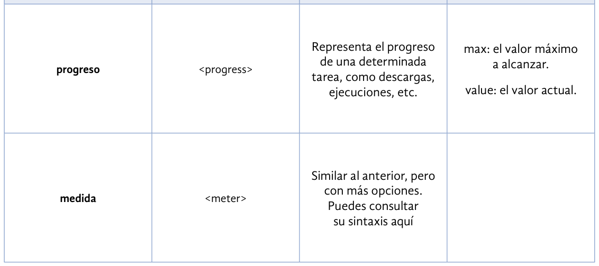
Este fragmento muestra el inicio de la estructura del formulario:
<form action="proceso.php" method="post">
<fieldset>
<legend>Datos personales</legend>
<p>Fecha: <input type="date" name="fecha"></p>
<p>Nombre:
<input type="text" name="nombre" size="45"
placeholder="Indica nombre completo">
</p>
<p>Edad: <input type="number" name="edad" min="0"></p>
<p>Correo: <input type="email" name="correo"></p>
</fieldset>
<fieldset>
<legend>Datos de interés</legend>
<p>Matrícula:
<input type="text" name="matricula"
pattern="[0-9]{4}[A-Z]{3}">
</p>
<label>Progreso del proyecto:
<progress value="35" max="100">35%</progress>
</label>
</fieldset>
</form>Etiquetas multimedia
En el tema anterior vimos que con el contenido incrustado podíamos incluir imágenes o iframes. Sin embargo, a la hora de incluir vídeos o audios no teníamos una etiqueta específica para ello y teníamos que acudir a complementos externos.
En HTML5 esto se soluciona mediante la inclusión de nuevas etiquetas que integran este tipo de contenidos de manera muy fácil.
6.1. Etiqueta audio
Con esta etiqueta podremos incluir audio en nuestra página web. La etiqueta a utilizar sería <audio> y tiene los siguientes atributos:
controls: indica si se ha de mostrar una barra de control de la reproducción del audio (play, stop, etc.).loop: indica si al acabar el audio debe comenzar de nuevo.preload: indica si el audio se precarga con la carga de la página o se carga al darle a reproducir.
Dentro de la etiqueta <audio> podemos tener la etiqueta <source>, que nos va a permitir indicar los diferentes formatos del audio. Esta tiene el atributo src, donde se indica la ubicación del fichero. Puede estar en local o ser una dirección de Internet.
En la web se utilizan mayoritariamente los formatos MP3 y Ogg. Debido a que no todos los navegadores son compatibles con estos formatos, habría que incluir ambos para garantizar su reproducción.
6.2. Etiqueta video
Con esta etiqueta podremos incluir vídeo en nuestra página web. La etiqueta que tendremos que usar es <video>, que utiliza las mismas etiquetas y atributos que <audio>, pero también incluye los siguientes atributos:
widthyheight: configuran el ancho y el alto del vídeo.autoplay: indica si comienza al cargar la página o no.muted: indica si el audio se reproduce o no.poster: indica el fotograma inicial del vídeo.
En la web se utilizan formatos como MP4, Ogg y WebM. Como no todos los navegadores son compatibles con los mismos formatos, habrá que incluir varias fuentes con la etiqueta <source> para intentar garantizar la reproducción.
6.3. Ejemplo de uso de etiquetas multimedia
<h1>Audio del mar</h1>
<audio controls preload="metadata" loop>
<source src="mar.mp3" type="audio/mpeg">
<source src="mar.ogg" type="audio/ogg">
El navegador no admite audio HTML5.
</audio>
<h1>Vídeo de Big Buck Bunny</h1>
<video width="384" height="288" controls
preload="metadata" loop poster="portada.jpg">
<source src="bunny.ogv" type="video/ogg">
<source src="bunny.webm" type="video/webm">
El navegador no admite vídeo HTML5.
</video>Código 3. Código HTML de las etiquetas audio y video.
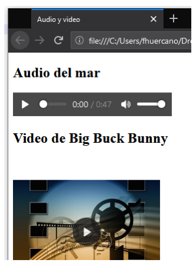
6.4. Etiqueta figure
Con esta etiqueta podemos incluir una descripción de una imagen, que se va a mostrar en el navegador. La etiqueta que hay que utilizar es <figure> y debe contener estas otras etiquetas:
<img>: indica la imagen a mostrar.<figcaption>: proporciona la descripción de la imagen.
<figure>
<img src="portada.jpg" alt="Portada del vídeo"
width="150" height="150">
<figcaption>Fig. 1 - Portada</figcaption>
</figure>Código 4. Código HTML de la etiqueta figure.
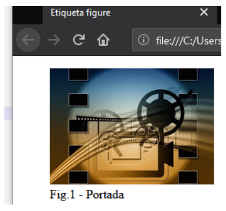
Elementos interactivos
HTML5 incluye algunas etiquetas que nos permiten cierta interactividad con los elementos HTML. Entre esas etiquetas se encuentra <details>, que nos permitirá ocultar parte de nuestra página web y volverá a ser visible cuando pinchemos en un icono que representa al elemento.
Dentro de la etiqueta <details> se incluye la etiqueta <summary>. El contenido que se indique en <summary> es lo que se muestra inicialmente, y el resto de contenido que se incluya en <details> es lo que se oculta hasta que pulsemos en el icono.
<h1>Test HTML</h1>
<details>
<summary>¿Qué etiqueta utilizamos para las imágenes?</summary>
<p>La etiqueta <img></p>
</details>
<br>
<details open>
<summary>¿Qué etiqueta utilizamos para los enlaces?</summary>
<p>La etiqueta <a></p>
</details>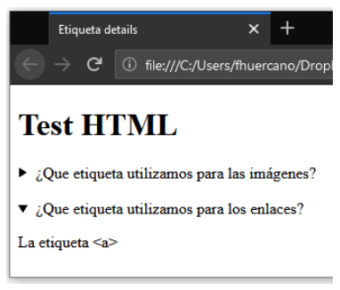
En el ejemplo, se ha abierto la segunda pregunta y por eso se visualiza la respuesta. La etiqueta <details> tiene un atributo open que, al incluirse, muestra visible el contenido al cargar la página, aunque después podamos ocultarlo.
En el código se han incluido las entidades HTML < y >, que representan los caracteres < y >, respectivamente. Al ser caracteres reservados del lenguaje, si los queremos incluir en el contenido se debe hacer a través de entidades HTML.
Caso práctico 1: «Actividades formativas»
Planteamiento: Alberto ha pensado que quiere incluir un apartado de preguntas frecuentes en la intranet de la empresa, y habla con Gloria para hacerlo.
Nudo: Alberto llama a Gloria y le comenta su idea. Ha pensado que la etiqueta ideal sería <details>. De esta manera, el sumario sería la pregunta frecuente y el contenido sería la respuesta.
A Gloria le gusta mucho la idea y se pone a ello. Alberto le comenta que él hará las preguntas sobre el correo electrónico y que ella las haga sobre el uso de la impresora.
Desenlace: en la siguiente figura puedes ver una representación de lo que visualizaría el navegador. El código HTML lo encontrarás en el anexo del tema.
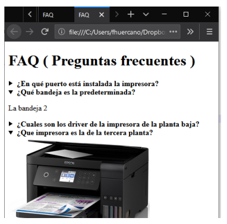
Solución completa del código: anexo del tema.
Caso práctico 2: «Vídeos explicativos»
Planteamiento: Gloria ha terminado las preguntas frecuentes, pero ha pensado incluir una última pregunta.
Nudo: ha detectado que le preguntan con mucha frecuencia cómo usar las funciones de las impresoras, y ha pensado incluir un apartado con algunos vídeos.
Desenlace: Gloria busca vídeos en YouTube para añadir demostraciones de cómo imprimir una página de prueba en las impresoras HP y Epson. Empieza a utilizar la etiqueta <video> y pensaba incluir en src la dirección web de YouTube. Sin embargo, le da problemas de permiso, incompatibilidad con el navegador, etc.
Por este motivo, investiga un poco y ve que en los vídeos de YouTube, en el apartado de «Compartir», se ofrece un código con la etiqueta <iframe>. Copia este código y lo utiliza en sus preguntas frecuentes.
En la siguiente figura puedes ver una representación de lo que visualizaría el navegador. El código HTML lo encontrarás en el anexo del tema.
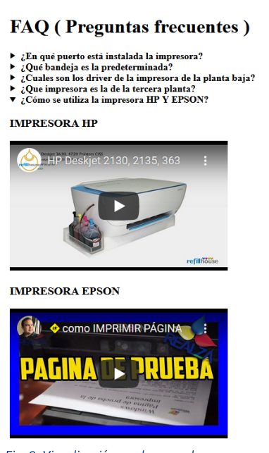
Solución completa del código: anexo del tema.
Resumen y resolución del caso práctico de la unidad
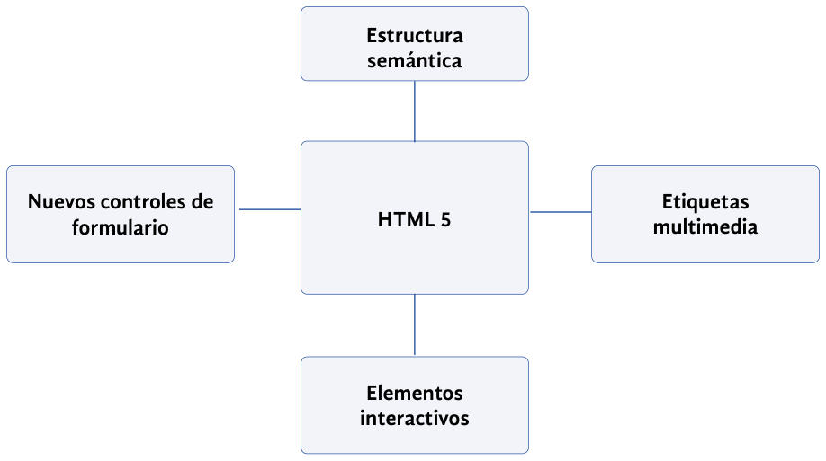
En este tema hemos visto las peculiaridades de HTML5 y cómo ofrece numerosas funcionalidades nuevas: etiquetas para la estructura semántica del documento HTML, nuevos controles para los formularios, inclusión directa de elementos multimedia y elementos interactivos.
Es importante indicar que HTML5 sigue en evolución y que los navegadores se van adaptando poco a poco. Por este motivo, es importante saber si una determinada etiqueta nueva se puede usar en los navegadores más populares.
Resolución del caso práctico de la unidad
En la siguiente figura puedes ver una representación de lo que visualizaría el navegador tras incluir los nuevos controles que la agencia de viajes Sol y Mar necesitaba añadir en su formulario.
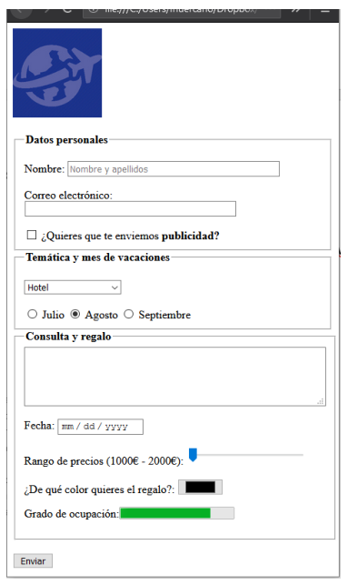
El código completo lo encontrarás en el anexo del tema.
Solución completa del código: anexo del tema.